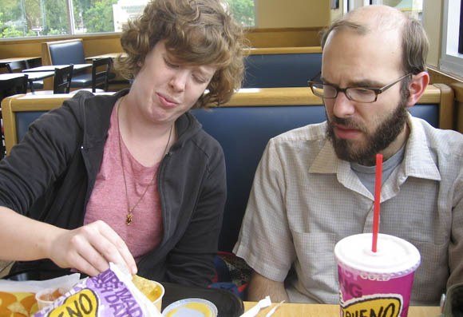

photo / Tyler Craft
Today’s your lucky day! Rumors have been going around for a looong time about Taco Bueno coming to Austin. And it looks like we’ll be getting one by the end of the year at Slaughter and MoPac!
From the Austin Business Journal:
Taco Bueno already opened one Central Texas store earlier this year at I-35 and Wonder World Drive in San Marcos. The new stores include:
- MoPac Expressway and Slaughter Lane set to open in the fourth quarter
- FM 1460 and State Highway 79 in Round Rock also expected to open in the fourth quarter
- Sunrise Road and University Boulevard in Round Rock near the Premium Outlets and IKEA slated to open in 2008
- State Highway 46 and I-35 in New Braunfels opening in the fourth quarter


Comments
Ugh. The two times I’ve eaten at TB have not turned out well for my guts, and this also means that they’ll start buying ad time in the Austin market for their horrible commercials. Yippee.
So you’re saying the luxury of being able to get a dinner consisting of a giant bowl of chips covered in refried beans, cheese, and sour cream mere miles away from where you live isn’t the best news you’ve ever heard? What about chimichangas stuffed with cheesecake and topped with sugar for dessert? Surely a “salad” made of chips covered in guacamole and lettuce appeals to you. I can’t believe you aren’t flipping out that finally (FINALLY!!!) cheap Mexican food will be available in Austin.
Bring it! That place is fierce!!
Anyone who’s from the DFW metro area gets why this is a big deal. If you grew up with Taco Bueno then hearing that they are finally coming to Austin is happy news indeed.
blasphemy!! Austin is a hotbed of non-chain, locally owned mexican food!!
I would hope that all of you have enough pride in yourselves to seek out better alternatives..
”..and on the 7th day, the taco gods created tacotown.org.”
-the bible
Granted, I’d rather go to Jardin Corona, but when I want a TexMex fast food fix, Bueno hits the spot. Cheap and yummy. Taco Bell is just disgusting by comparison. Grew up in Dallas, miss my Bueno.
I HAVE BEEN WAITING FOR THIS FOREVER! All we need now is a Snuffers :)
I grew up in the Dallas area and I am a Taco Bueno fanatic. I love that Taco Bueno is here, as long as they are not skimpy on the portions they should do great!! Great hot sauce, free Jalapeno’s I agree with Chappy: I have missed my Bueno also…..
I worked for Taco Bueno as a kid in high school. It is the only place I worked as a kid in high school that I will still eat at. The food is great!
I have been doing spot checks on the south location at least once a week. The store front is up in all it’s glory! The turn lane has been completed into the area! The parking lot is clear to it.
Anyone know the actual date it opens?
OK for anyone who is still watching this, I thought I would let you know that I have been told by the higher powers that the location will be opening sometime after January 6th. When I find out the actually date I will post it here!
Long live the Buenoheads!
taco bueno will open in Jan 2008
Yes, i grew up with taco bueno, and its WAY better than taco bell!Bueno Chilada platter, here i come!!
oh it’s been soo long… mmmmmmm chilada platter… mmmmm
Finally……..my Taco Bueno dreams have been answered! It is about time they came to the Austin area! THANK YOU!!!!!!!
Just got word that the opening date is January 15th for the Bueno at Mopac and Slaughter!
I am going for breakfast.. love their breakfast burritos!
I am going to go for lunch with a couple of friends!
I think I will stop and pick up dinner on the way home!
I am so glad it is between my house and work! lol
By the way.. the 15th is a Tuesday!
I moved here from the DFW area over 6 years ago and the ONLY thing I missed about Dallas was Taco Bueno! I make a trip there every time I go back to Dallas..Now, there’s going to be one 2 minutes from my house. I’m thrilled! I feel bad for Taco Bell cause they’re nasty and now there’s gonna be serious competition.
We used to take a cooler to fill it with the burritos to bring back. The kids would warm them up for breakfast and snacks.
Where I used to work, who ever went to Dallas brought back TB for the group for lunch on the following day.
So excited!
I am going to pick my daughter up from high school for lunch on opening day. She is so excited! It is right up the street!
Family bonding with Taco Bueno. Bringing everyone back to the table!
Sorry, I’ll save you a trip for breakfast…..They will be opening at 10am for lunch.
I saw all the lights on and cars in the parking lost last night as I was driving by so my girlfriend and I decided to drop in. We found out that there were not open yet, but that they would be opening tomorrow (today). A nice worker there gave us 3 free combo meals with drinks for our trouble. So far I like the service. :)
Taco Bueno is amazing! I grew up with Taco Bueno back in Oklahoma. I live in Cali now, and I’ve visited Oklahoma many times since, I still make my first stop when I get there a trip to Taco Bueno! It’s nice to see that they’re finally starting to spread their business. I will soon be returning to Oklahoma to reside as a permanent citizen and I am more than proud to say that I will be going to Taco Bueno often. :D Congrats for getting a Taco Bueno in your area! Hope they can expand even further to the west.
I have visited the new one on Slaughter Lane (woo hoo! ) but it’s a long way from my house… any news on the ones scheduled for the Round Rock area??
…finally…. Something that taste great for a great price! I grew up in mckinney Texas with a bueno down the street and ever since moving to round rock iv had to settle for taco buenos little sister, tacoBell and there high prices. can’t wait til it opens!
I do not think a TB would be could for any area, due to my last visit on 4/11/08. I got food poisining from the chicken totilla soup. It to me 2 days to get over it. and I am still suffering from it. Please try to shut this down. It would ruin the true culture of Auston heritage of true Mexican food.
one bueno lets there help eat out of the pans of meat and beans buy diping chips in while filling orders 3-08
go in 22 minutes before 10 oclock order and was told the lobby closes in 20 minutes then he walked over and locked the doors,what kind of way is that to run a business? 5-30-08
The chicken taquitos are addicting. I’ve had them 4 days in a row!